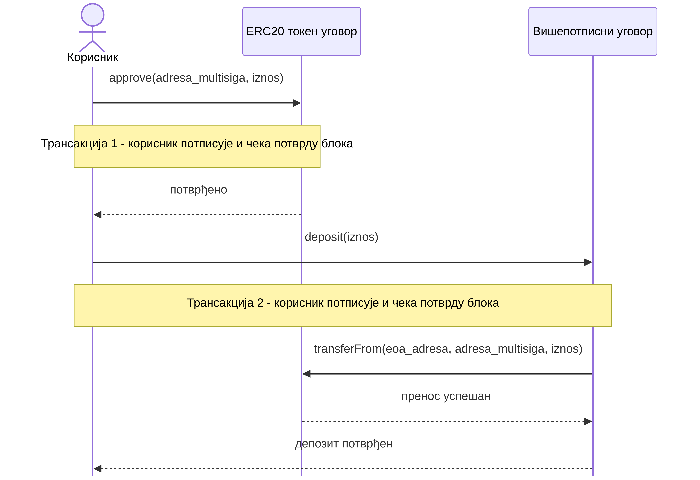
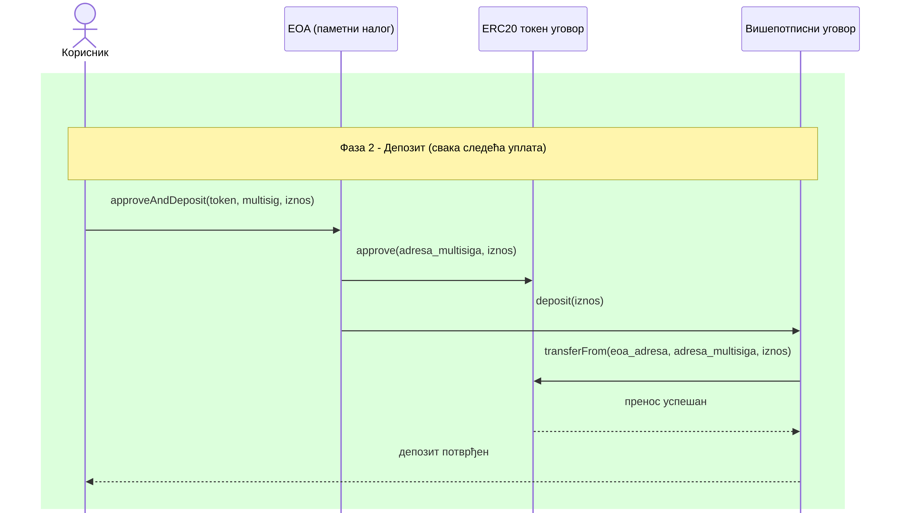

Дизајн и имплементација EIP-7702-компатибилног Ethereum вишепотписног дигиталног новчаника
Нови Сад, 2026.
Шта је дигитални новчаник
- Апликација која представља "омотач" око приватног кључа и потписује трансакције у име корисника
- Стандардни облик налога: EOA, једна адреса, један приватни кључ
- Служи за слање и пријем ETH и ERC-20 токена, интеракцију са паметним уговорима
Недостаци
- Један приватни кључ = јединствена тачка отказа
- Пословни свет уобичајено захтева сагласност више страна пре трансакција веће вредности
- Стандардни EOA новчаник то нативно не подржава
Решење: вишепотписни уговор (M-од-N)
\[ 1 \leq M \leq N \]
- Паметни уговор чува листу овлашћених потписника и праг M
- Ток интеракције:
propose→sign→execute - Трансакција се извршава тек када се прикупи довољно потписа
Проблем: депозит ERC-20 токена
Нативни ETH депозит иде директно, једном трансакцијом. ERC-20 стандард захтева одобрење пре преноса средстава.

approve() па тек онда transferFrom(), две трансакције, два потписа, два пута гас
Постојећа решења: Permit2
- Permit2 (Uniswap) је треће лице - канонски уговор коме се даје једно, обично максимално одобрење за сва будућа повлачења
- Корисник трајно верује туђем уговору, опозив захтева посебну трансакцију одобрења износа нула
- EIP-7702 ниједном трећем уговору не даје стално одобрење, делегација се опозива истом врстом трансакције којом је и активирана
EIP-7702
- Уведен Pectra надоградњом Ethereum мреже, активна од 7. маја 2025.
- Не позива се туђи уговор, него се његов код привремено делегира EOA налогу, чинећи га "паметним налогом"
- Код се извршава са адресе самог корисника, не са адресе туђег уговора, EOA задржава своју адресу и приватни кључ
Шта носи трансакција типа 4
{
type: 4,
chainId: 11155111, // Sepolia
nonce: 91, // sopstveni nonce transakcije
authorizationList: [
{
address: "0x828F4dc0...C2429764", // Approver ugovor (kod se delegira)
nonce: 92, // tx.nonce + 1 (self-sponsored)
yParity: 1,
r: "0xec9d4f8a...944aa253", // potpis EOA-a
s: "0x236389ad...1d6a11fe97",
}
]
}https://sepolia.etherscan.io/tx/0x7dfe5a05a609187c4f5f41ca95a0b261bdd58c3f1dd0f69d9e44da6681e190eb
EIP-7702: једна трансакција уместо две
approveAndDeposit обавља одобрење и депозит атомски, у једној трансакцији.

Приказана фаза депозита, активација делегације и опозив су посебни, једнократни кораци
Демо - комплетан ток
Снимак демонстрира комплетан радни ток, објављивање уговора, потписивање и извршавање трансакције, класичан и EIP-7702 депозит.
Закључак
- Комбинација M-од-N вишепотписног уговора и EIP-7702 делегације решава оба ограничења EOA налога, без миграције идентитета
- Демонстрирано стварним трансакцијама на Sepolia мрежи
Хвала на пажњи!
Питања?